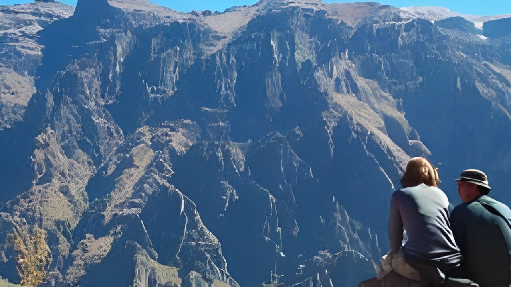
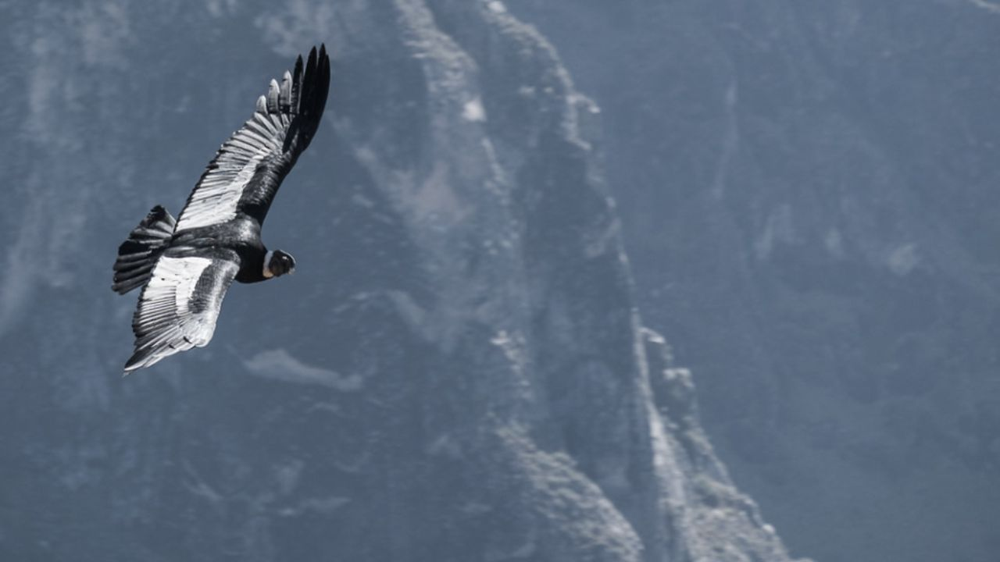

Tour Cañón del Colca



Presencia el increíble vuelo del cóndor en su hábitat natural.
El Cañón del Colca es uno de los destinos turísticos más populares del país para ver cóndores en estado salvaje.
Detalle
Desde las grandes Terrazas Andinas (más del doble de profundas que el Gran Cañón en los EE. UU. con 4,160 metros de profundidad) verás al majestuoso cóndor en vuelo. Originalmente, el área fue habitada por los antiguos collaguas y los cabanas, y finalmente por los incas. Hoy en día, la gente local aún mantiene las tradiciones ancestrales cultivando las terrazas escalonadas. Además del cañón, la zona es una de las más volcánicamente activas en Perú (como el Misti).
Incluye:
- Recojo de tu hotel.
- Todas las entradas.
- Regreso a tu hotel al final del tour.
- Guía profesional de habla inglesa/hispana.
No Incluye:
- Extras y propinas.